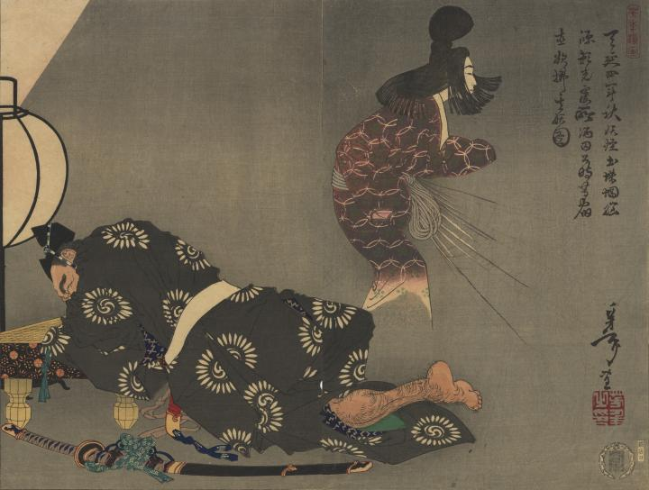

源頼光の病床に出現した土蜘蛛の変化。女性の姿で、腰のあたりから糸のようなものが噴き出している。
著作者：芳年／出典：親書誌：U426_nichibunken_0316：天延四年秋妖怪土蛛蛧悩源頼光寝所酒田公時等宿直欲払其妖圖；テンエン 4ネン アキ ヨウカイ ツチグモ ミナモト ライコウ オ ナヤマシ シンジョ ノ サカタ キントキ ラ トノイ シテ ソノ アヤカシ オ ハラワン ト ホッス ノ ズ／日付：2014／資源識別子：U426_nichibunken_0316_0001_0000
Copyright (c)2010- International Research Center for Japanese Studies, Kyoto, Japan. All rights reserved.